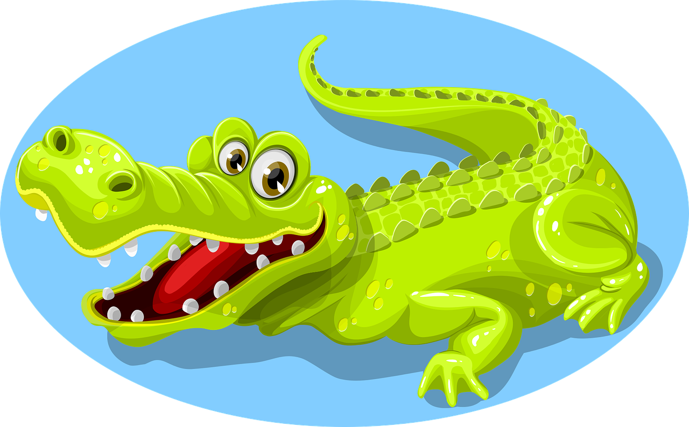

Krokodyle
Krokodyle (Crocodilia) – rząd dużych gadów drapieżnych z grupy zauropsydów, wiodących ziemno-wodny tryb życia. Pojawiły się 83,5 mln lat temu (czyli w późnej kredzie). Są najbliższymi krewnymi ptaków i jedynymi prócz nich przetrwałymi do dziś archozaurami, a także jedynymi współcześnie występującymi członkami Crurotarsi.
